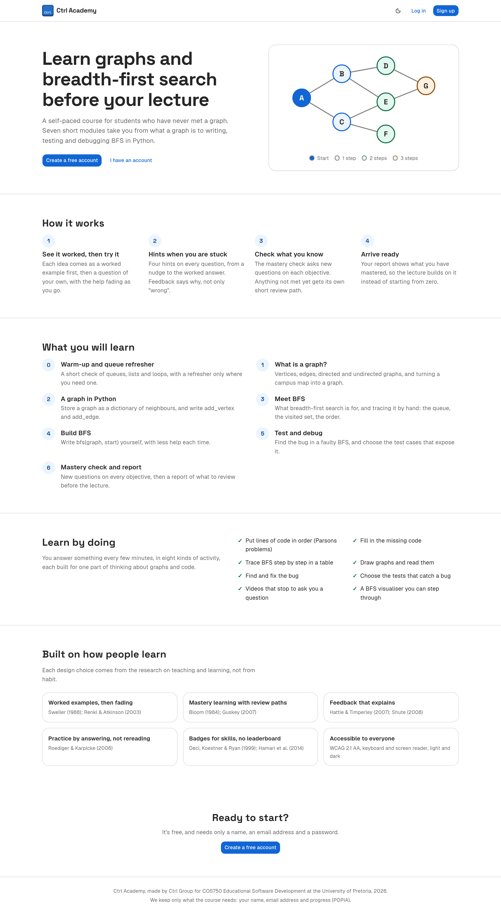
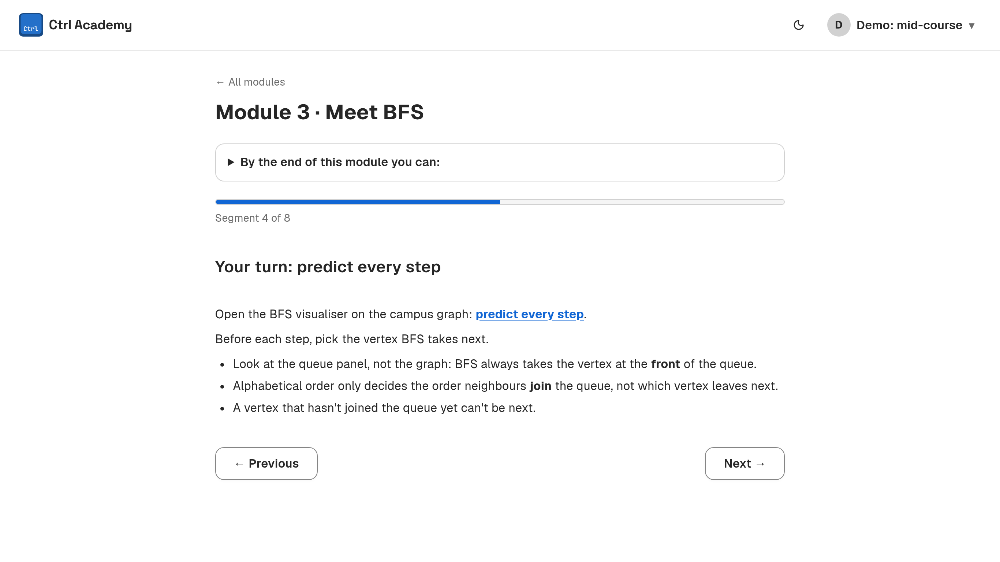
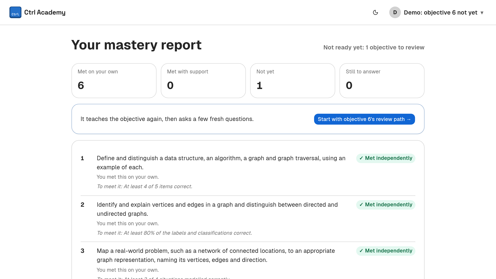

A pre-lecture tutor for COS212 students who have never met a graph
CS2023 Algorithmic Foundations: graphs, BFS and shortest paths are core topics. Learner profile: ID document §2.

| # | The student can… | Bloom | Evidence in the app | Met when |
|---|---|---|---|---|
| 1 | define a data structure, an algorithm, a graph, a traversal | Understand | matching, multiple choice | 4 of 5 |
| 2 | identify vertices and edges; directed or undirected | Understand | labelling and classifying | 80% |
| 3 | map a real problem to a graph | Apply | choosing the model of a situation | 3 of 4 |
| 4 | explain what BFS is for | Understand | choosing BFS with a reason | 3 of 4 |
| 5 | trace BFS by hand | Apply | trace table on an unseen graph | ≤ 1 error |
| 6 | implement BFS in Python | Apply | Parsons, then fill-in with fading | matches solution |
| 7 | test and debug BFS | Evaluate | fix the bug; choose the tests | both bugs |
| 8 | find the shortest route with BFS, and say why it is shortest | Apply | fewest edges, the route, the reason | 3 of 4 |
Constructive alignment (Biggs): each objective's activity and assessment exercise the same skill. ID document Table 1.
Learners, prior knowledge, CS2023 · 22 Oct – 1 Nov
Objectives, criteria, storyboards, motivation · to 8 Nov
Content as data: questions, hints, feedback, scripts · 2–15 Nov
On staging, in the team's hands every sprint
Pilot, logs, export · feeds back into Design
Every phase leaves an artefact the panel can check: a learner profile, Table 1, the fixtures, the evaluation plan.
We prototyped inside it (SAM-style), so content was tried on screen days after it was written, not at the end.
Gain attention with a problem, state the goals, recall prior knowledge, worked example, practice, feedback, assess, transfer.
Every new skill starts as a worked example, then a question; module 4 removes help step by step: Parsons, 3 blanks, 9 blanks (Sweller; Renkl & Atkinson).
Module 1 opens with the campus puzzle before any definition; students build the graph themselves (Kapur, productive failure).
Immediate feedback that explains why, never just "wrong" (Hattie & Timperley).

Module 0 checks queues, lists, loops
4-level hint ladder: nudge → worked answer
Extra worked example if a student struggles in a module
Unseen items, one answer each, hints ≤ 2
Per objective, with the next step
Met independently Met with support Not yet

A real problem first; videos that stop to ask a question.
Campus routes, bus networks, study groups: graphs students know.
Clear goals, honest time estimates, hints that never leave anyone stuck.
Badges that name a skill learnt, and the "ready for the lecture" moment.
ARCS (Keller). Self-determination: autonomy (stop and resume anywhere), competence (mastery report), relatedness (the lecture it prepares for). ID document, Motivation.
API tests, including every content answer run through the BFS engine
web tests of every screen and activity kind
browsers every end-to-end test runs in: Chromium, Firefox and WebKit
WCAG 2.1 AA violations found by axe, light and dark, every page
Keyboard only, visible focus, screen-reader labels, 360 px phones to 4K screens.
Penetration-tested login, rate limits, no student code run, POPIA: only name, email and progress kept.
Every attempt and hint logged; staff export the data for evaluation.
Generative AI was used for parts of the code, the documents and the content; every use is recorded with its prompts in the ID document §10, and every output was reviewed and tested.
ctrlacademy.co.za
github.com/ctrl-group-cos750/cos750-project